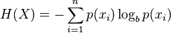
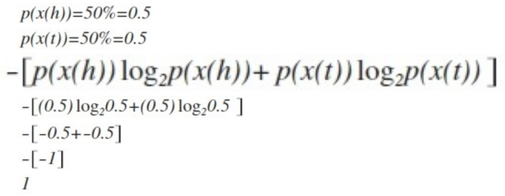
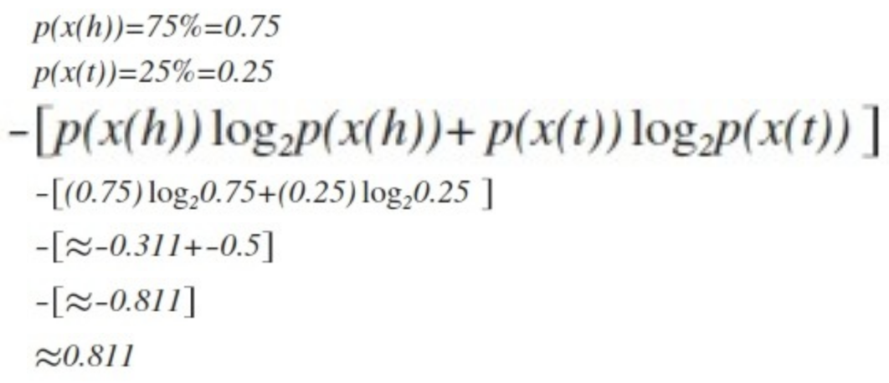

This article was originally published on March 19, 2014
After one late night attempting to explain the laws of information entropy, I decided to write an article to sum it up (literally).
We usually hear about entropy in regards to physics, in which it describes how random a physical system is. Newton’s Second Law of Thermodynamics states that a system’s entropy increases over time naturally, meaning that randomness is increased. Information entropy is a little different than physical entropy, though there are related aspects. Information entropy describes how random the information is, though its entropy does not naturally increase over time. Information entropy was first described by Claude Shannon in 1948.
Shannon’s entropy equation is as follows:

where p(x) is the probability of a particular byte and n is the probability space. In the case of computer data, the maximum probability space is n = 256 because there are 256 possible bytes - 0x00 to 0xFF in hex. In practical applications, n can be smaller if a particular byte is not present within the information being calculated.
Let’s simplify: what’s the entropy of a fair coin toss? This is calculated as:

So the answer is 1. What does this mean? In full terms, it means that the amount of information retrieved from a fair coin flip is 1 bit of information per 1 bit of information, and this measurement verifies that the coin’s probability of outcomes is indeed fair. The coin is as random as it can be - there isn’t anything more random than 50/50 with a coin flip.
Let’s decrease the randomness of a coin flip by making the coin unfair by increasing the chance of heads to 75%:

The entropy for this unfair coin toss is around 0.811, meaning that the amount of information retrieved from this unfair coin is around 0.811 bits of information per 1 bit of information. If the probability of heads in increased to 90%, that unfair coin has an even lower entropy than 0.811 bits per bit. Following this trend, as information becomes less random, its entropy becomes smaller relative to the amount of bits per unit of information. A coin with heads on both sides always lands heads and its entropy is exactly zero, meaning that no useful information is conveyed with this kind of coin flip.
So calculating the entropy of a fair and unfair coin is interesting, but what practical uses does entropy have, you say? Cryptography algorithms increase entropy of unencrypted data by obscuring it such that without a decryption key, the encrypted information appears more random than the unencrypted information. Compression algorithms decrease the entropy of a file by removing redundant, less random data to lower the file’s size. In fact, from a computational complexity perspective, the amount of entropy of uncompressed data details the mathematical lower bound, which is the best any compression algorithm could ever hope to achieve. In computer and network security, high entropy data may indicate a malicious program trying to mask itself through encryption or obsufcation and low entropy data may indicate a non-compliance of an applied encryption security program, though each scenario depends on the environment and how its used.
To calculate the entropy of a file, it must be read byte by byte. Each occurrence of a byte is added to a frequency array to keep track of how often a byte occurs. After the entire file is read, the frequency array is used to calculate the file’s entropy by summing each byte’s possibility multiplied by the logarithm of its possibility, and then the result is multiplied by negative one - Shannon’s entropy equation.
To see Java code that calculates the entropy of a file at an entered file path, take a look at https://github.com/willjasen/entropy
And there you have it!
Sources: